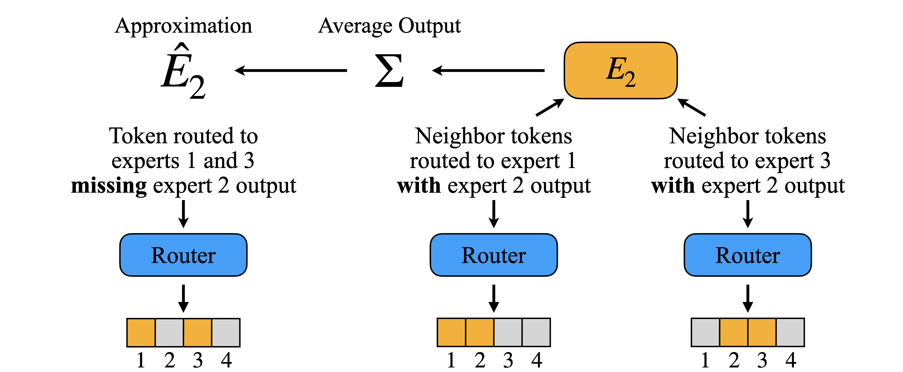
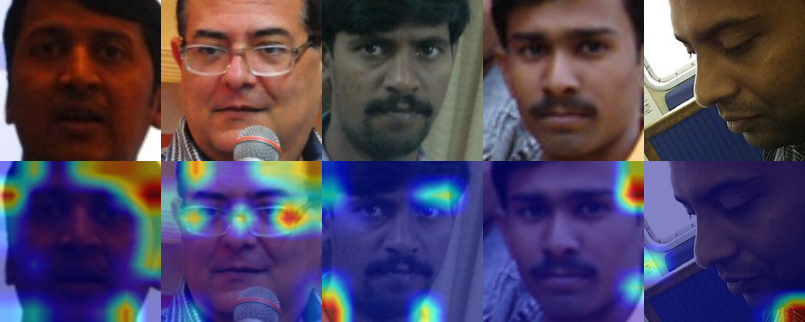

|
Vatsal Baherwani I'm an undergrad student at the University of Maryland, graduating in 2025. This summer I will join the Center for Human-Compatible AI as a research fellow. Email / CV / Google Scholar / Twitter / Github / LinkedIn / Blog |
{kind=link}
ResearchI am interested in making AI more accessible, interpretable, and trustworthy. This includes:
|

|
Video Diffusion Models Encode Motion in Early Timesteps
Vatsal Baherwani, Yixuan Ren, Abhinav Shrivastava Under Review We show that motion information is independently learned in early timesteps of the diffusion process, prior to the materialization of spatial attributes. We use this insight to present a simple and efficient method for targeted video motion customization. |
|  |
Dense Backpropagation Improves Routing for Sparsely-Gated Mixture-of-Experts
Ashwinee Panda*, Vatsal Baherwani*, Zain Sarwar, Benjamin Therien, Supriyo Chakraborty, Tom Goldstein NeurIPS 2024 OPT, ENLSP, Neural Compression Workshops We approximate the dense backward pass of a sparse mixture-of-experts model, leading to improved training stability and performance with negligible overhead. |
|  |
Racial and Gender Stereotypes Encoded Into CLIP Representations
Vatsal Baherwani, Joseph Vincent ICLR 2024 Tiny Paper We demonstrate that image and text embeddings in CLIP exhibit strong biases corresponding to prevalent racial and gender stereotypes. |
|
Thanks to Jon Barron for his website template. |